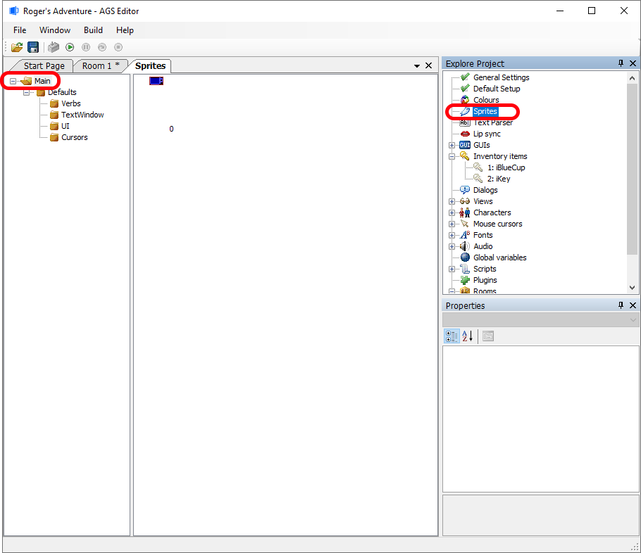
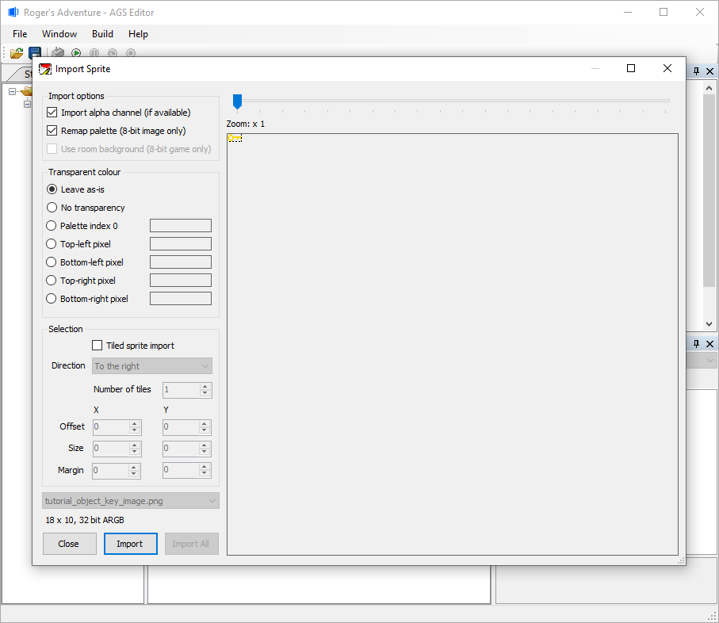
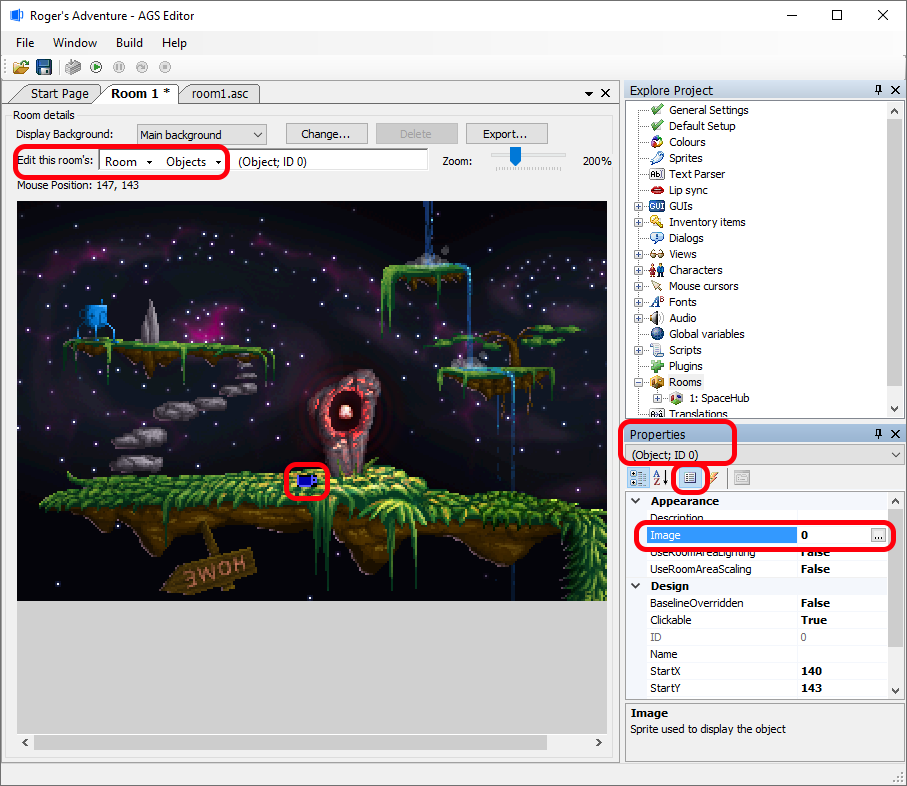
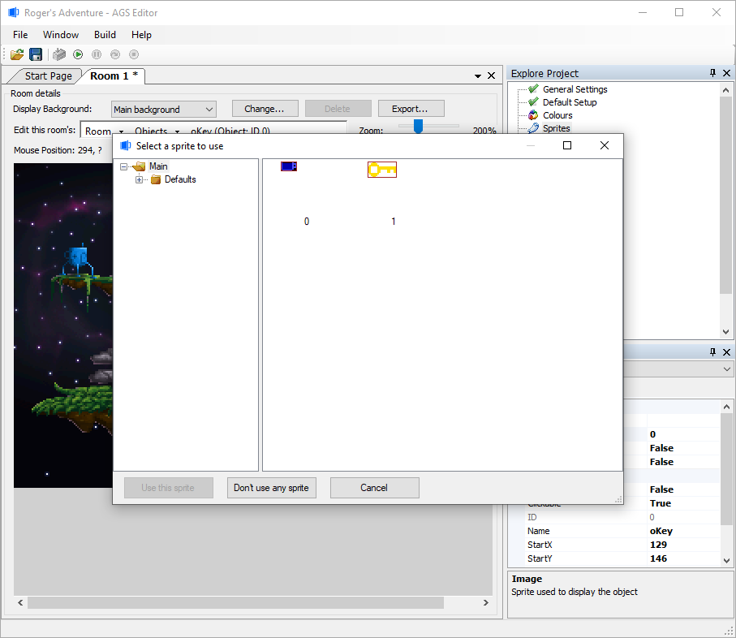
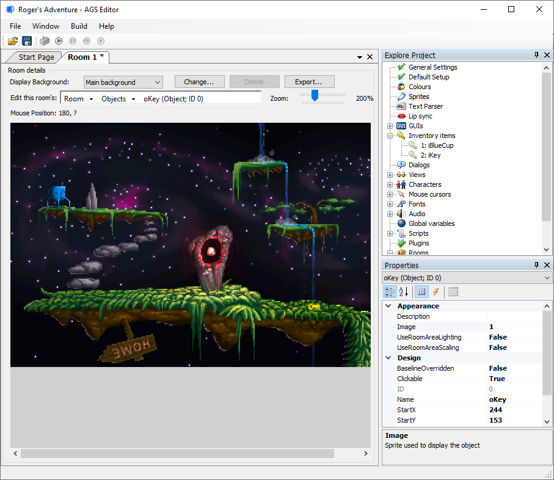
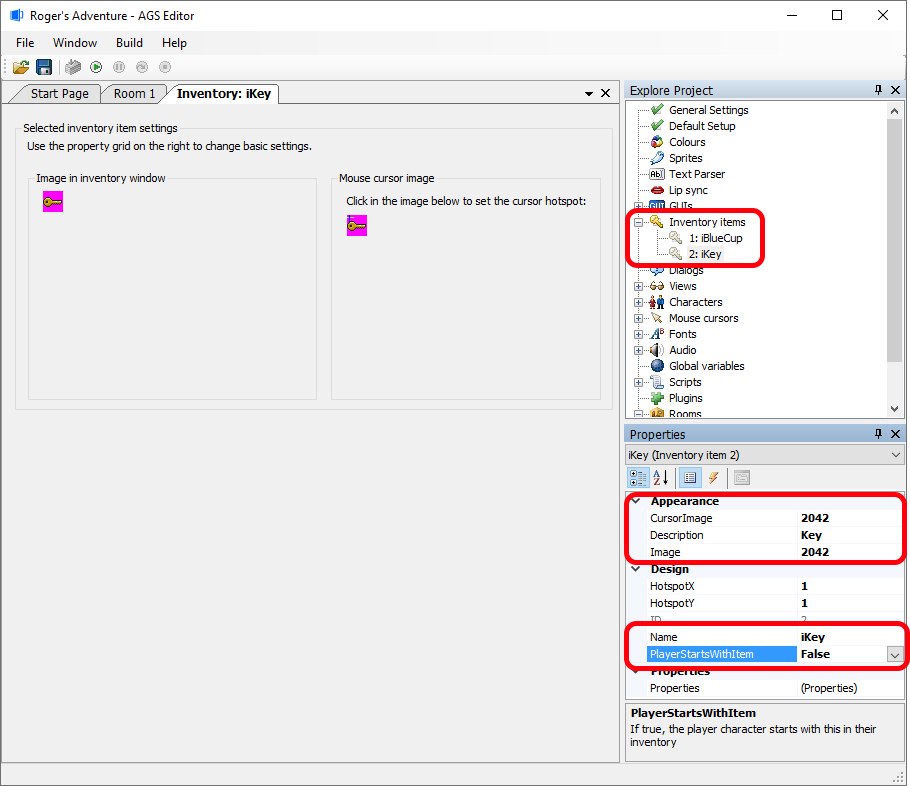
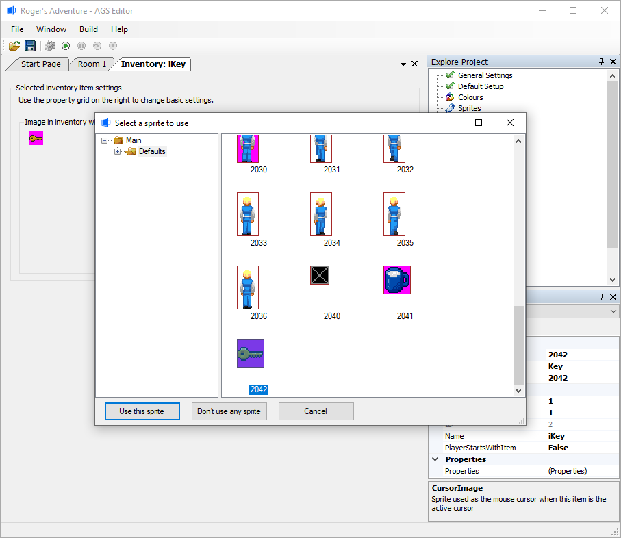
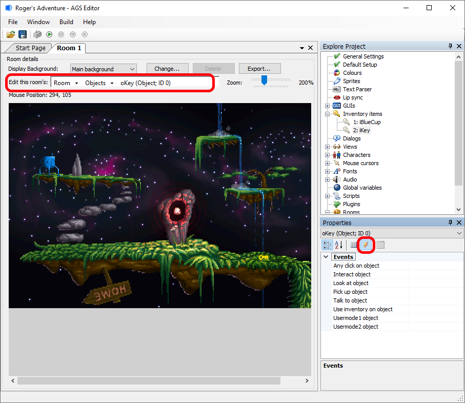
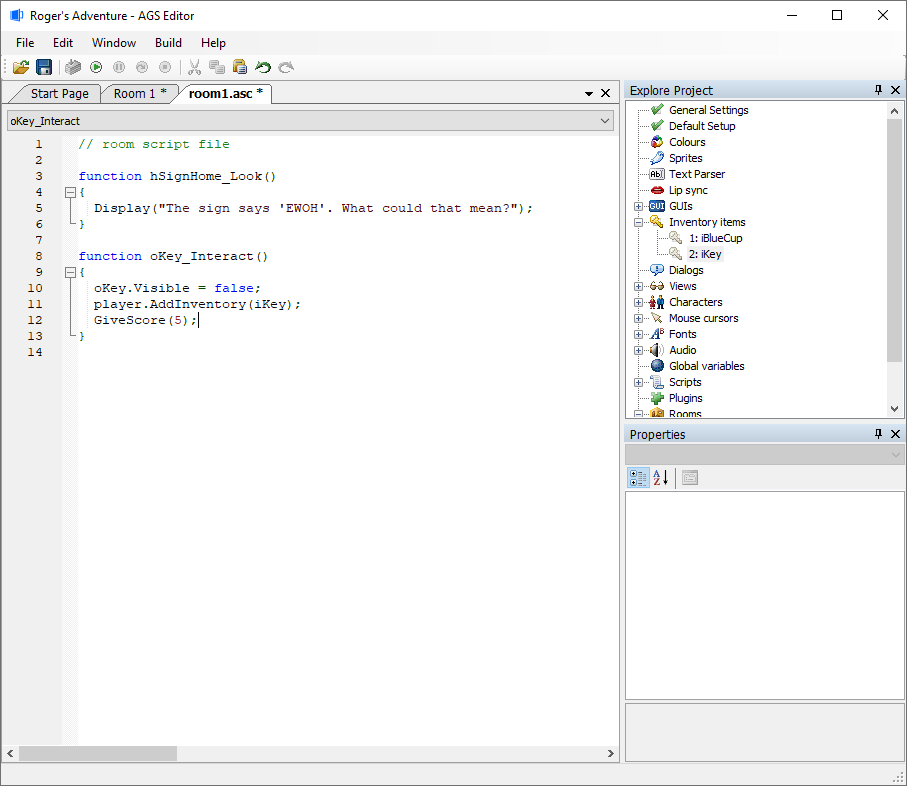

Getting Started with AGS - Part 4
Objects
Objects are items on the screen which, unlike hotspots, can move, change, and disappear. You use objects for things in the room that the player can take (since they can disappear), and for things which need to animate.
So, let's revisit the age-old "key" inventory item. Let's say we will have a locked door on another screen, and the player can pick up a key from this room to open the door with. Please don't use this puzzle when you're making a proper game, it's been done far too many times. ;-)
Import a Sprite
For this tutorial we will need to import a sprite of a key to be used later as an object on the background. Right-click on the following key image, save it to your computer, and we will import it into the Sprite Manager of the AGS Editor soon.
Within the AGS Editor, choose "Sprites" from the Project Tree, in the upper-right of the editor. Making sure you have "Main" selected in the left-side tree, you should have a screen that look like this:v

Right-click to the right of the "blue cup" image # 0, and you should get a context window drop-down of actions. Choose "Import new sprite(s) from files...". Navigate to where you saved the key image on your computer and select that image file. Next, you will see the "Import Sprite" window. The window should look like this:

Go ahead and select the "Import" button. You will now be able to see your new key graphic next to the blue cup graphic. It is now ready to be chosen as a graphic within your game.
Now that we've got our key sprite ready to be used, let's get back to discussing Objects.
From the same Room Parts drop-down list as we chose "Walkable areas" and "Hotspots" earlier, let's return there and select "Objects". Now, to add an object to the room, simply right-click on the background where you want to add it, and choose "Place New Object Here" from the menu which appears.
As if by magic, a blue cup appears! This is the default sprite in AGS, and will appear anywhere that you haven't selected a proper image yet. Notice that the Properties Grid has changed to display the details of this new object -- one of which is a property called Image. Select this property, and a "..." button appears.

Click the "..." button, and you'll be presented with the Sprite Manager. We'll explain this in even more detail later, but basically it is the focal point in AGS where you import and export all your graphics except for room backgrounds. For this tutorial, ensure that the "Main" tree choice in the left-side tree is selected, and you should see your small key picture that we imported earlier. Double-click that "Key" image.

You should now see that the blue cup graphic has changed into a key. You can move it around by left-clicking and dragging the sprite within the background image. Place it somewhere sensible on your screen. I placed it further to the right of the walkable area.
The next thing we should do is give the object a name. Similar to what we did with hotspots, since the object will be referred to in the script it will need a name that we can call it by. Scroll down the Properties Grid and find the "Name" property, and set it to something sensible. The convention in AGS is to have object names start with an "o", for example oKey.

Before we enable the key to be taken by the player, let me quickly go over a couple of properties in the Properties Grid:
- Baseline - normally, the baseline for an object is set to the bottom of the object graphic (baselines are used to calculate which items on the screen are drawn in front and which are drawn at the back). However, in some cases you might want to override this.
What you'll notice with our key is that if the player walks just behind it, the key will appear in front of his feet. This is not what we want, since the key is supposed to be lying flat on the ground. To correct this, change the Baseline property to 5 (this means that it will be drawn behind everything that has a baseline lower down the screen than Y=5). This will make sure that the player is always drawn in front of the key. - Visible - this toggles whether the object is switched on at the beginning of the game or not. For our key we want it to be True, but sometimes you'll have objects which you don't want the player to see until they've done something else in the game.
(NOTE: Having a large number of large objects on-screen can potentially cause the game to slow down. AGS imposes a limit of 40 objects per room.)
Right, now back to the pressing matter at hand - letting the player pick up the key.
Inventory
Now wait, there's one more step we need to do first. At the moment we could let the player pick up the key, but then what would happen to it? Where would it go? We need to define the player's inventory.
Expand the "Inventory Items" node in the upper-right Project Tree. You'll see that there are already two items defined - "iBlueCup" and "iKey". These are just defaults to help you get started. Double click "2: iKey", and you should see a window open with a slightly different key image than the key image you imported earlier. This inventory item "key" has already been setup for you with a different image that looks better on an inventory screen. This is because an object for a background can appear of a different size and image than when it is shown in the player's inventory (if you want it that way). Remember, objects are separate entities than inventory items.
- For this tutorial, update the field in the Properties Grid of "PlayerStartsWithItem" to be "False" for this iKey inventory object!

To view where this inventory image of a key is being linked to, find the "Image" property in the Properties Grid, select it, and then click the "..." button. The sprite manager re-appears, and you will find the sprite to represent the inventory object in the larger format.

OK, there are a few other settings on this screen, but let's return to our objective - letting the player pick up the key. Remember that the script name is iKey, as we'll need it later.
Back to the events
Go back to the Objects pane of the "Room" tab, ensure that you still have the "key" object selected, and then click on, yes you've guessed it, the Events button. The events here are very similar to the ones we had for the hotspot:

Notice there are two obvious possibilities here: "Interact object" and "Pick up object". We actually want to use the "Interact object" event, because we are using the default Sierra-style interface which doesn't have a specific Pick Up mode. The "Pick up", "Usermode1" and "Usermode2" events are useful if you go for a LucasArts-style interface which has more verb types available to the player.
So, select "Interact object" and click the "..." button. When the player picks up the key we want two things to happen - firstly, the object on-screen needs to disappear, and secondly, the inventory item needs to be added to the player's inventory.
Here's my script solution. As an added bonus, I've also given the player 5 points for their trouble, but you don't need to have that third command:

Note that our solution is not perfect - the player can click the hand icon on the key from anywhere in the room and it will disappear. We are also not displaying a message informing the player of what happened. But, the functionality is there, and this will do fine for now.
Testing Your Work
OK, so we now have a fully-working first room. Test the game as before (F5) , and try it out. View your inventory first, and you should only have a "Blue Cup". Once the player has taken the key, call up their inventory and you should see the large key picture there.
Next Chapter: Part 5 - Managing Inventory